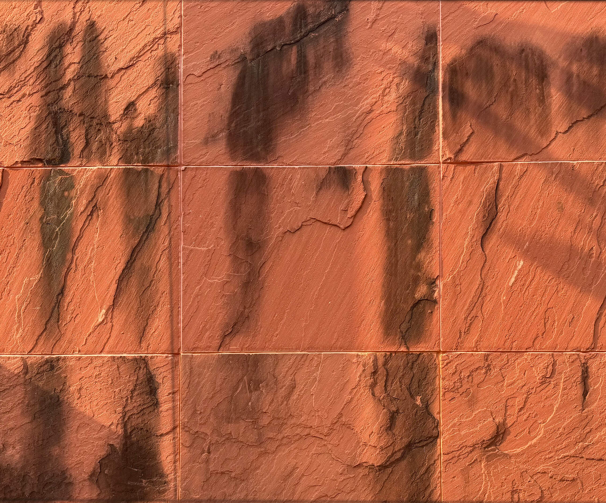

붉은 벽 질감 벽  1) 고급 주택의 외벽이나 리조트, 펜션 2) 문화 박물관의 외벽 3) 카페나 갤러리의 인테리어 포인트 벽 벽돌 벽 1) 학교 건물의 외벽이나 주택, 아파트 단지의 외벽 2) 도서관과 같은 공공 건물 외벽
회색 벽 벽돌 벽 1) 상업용 건물, 공장, 창고 등의 외벽 마감재로 사용 2) 하단과 맞닿은 공공 구조물에 사용 타일 벽 1) 지하철 내부 벽 2) 도시 공원이나 대학과 건물 등 공공 건물 외벽 3) 주차장이나 상가 외벽